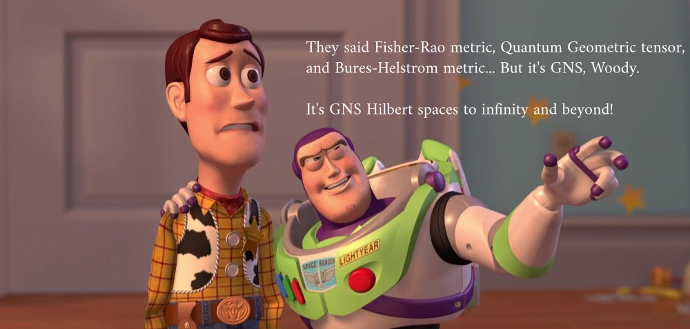
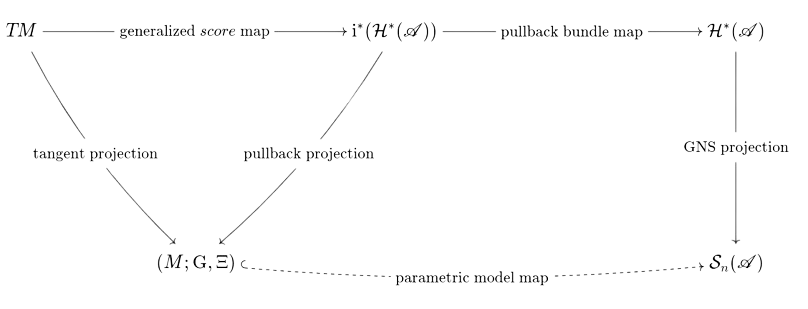

1 \(\;\) Look: it’s GNS Hilbert spaces everywhere!
1.1 \(\qquad\) Information geometry via GNS construction
Florio M. Ciaglia
Universidad Carlos III de Madrid
GEOMETRY AND DYNAMICS · Naples · 14-16 January 2026
Joint work in collaboration with:
M. Castrillón (UCM)
L. E. González-Bravo (UCM)
A. Ibort (UC3M)
2 Very informal take-home message

3 Classical models
Parametric statistical model on the measure space \((\Omega,\mu)\): \[ \mathrm{i}\colon\Theta\subseteq\mathbb{R}^{n} \hookrightarrow \mathcal{P}(\Omega) \] \[ (\theta^1,\dots,\theta^n)\equiv \theta \mapsto \mathrm{i}(\theta)= \mathrm{p}_{\theta}(A)=\int_{A}p(\theta;\omega)\,\mathrm{d}\mu(\omega) \]
Score functions: \[ s_{j}(\theta;\omega):=\partial_{\theta^j}\log p(\theta;\omega)\,\in\;\mathcal{L}^{2}(\Omega,\mathrm{p}_{\theta}) \]
Fisher-Rao metric:
\[ g^{\mathrm{FR}}_{jk}(\theta)=\int_{\Omega} s_{j}(\theta;\omega)\,s_{k}(\theta;\omega)\, p(\theta;\omega)\,d\mu(\omega) = \mathbb{E}_{p_\theta}[s_{j} \,s_{k}] \]
4 Pure Quantum models
Parametric model of normalized vectors on the Hilbert space of the system: \[ \mathrm{i}\colon \Lambda\subseteq\mathbb{R}^{n} \hookrightarrow \mathcal{H} \]
\[ (\lambda^1,\dots,\lambda^n)= \lambda \mapsto \mathrm{i}(\lambda)=\psi(\lambda) \in \mathcal{H},\quad \langle \psi(\lambda)|\psi(\lambda)\rangle = 1 \]
Quantum geometric tensor (QGT): \[ Q_{ij}(\lambda) = \langle \partial_i \psi(\lambda), \partial_j \psi(\lambda)\rangle - \langle \partial_i \psi(\lambda), \psi(\lambda)\rangle \langle \psi(\lambda), \partial_j \psi(\lambda)\rangle \]
Fubini-Study metric (symmetric part): \[ g_{ij}^{\mathrm{FS}}(\lambda)= \Re Q_{ij}(\lambda) \]
Berry curvature (anti-symmetric part): \[ \varpi_{ij}(\lambda)= \Im Q_{ij}(\lambda) \]
5 Faithful Quantum models
Parametric model of invertible density operators on the Hilbert space of the system: \[ \mathrm{i}\colon \Lambda\subseteq\mathbb{R}^{n} \hookrightarrow \mathcal{B}_{1}(\mathcal{H}) \]
\[ (\lambda^1,\dots,\lambda^n)= \lambda \mapsto \mathrm{i}(\lambda)=\rho(\lambda) \in \mathcal{B}_{1}(\mathcal{H}),\quad \rho(\lambda)>0,\quad \mathrm{Tr}_{\mathcal{H}}(\rho(\lambda))=1 \]
Symmetric Logarithmic Derivatives (SLDs):
\[ \frac{\partial \rho(\lambda)}{\partial \lambda^{j}}=\{\rho(\lambda),\mathbf{L}_{j}(\lambda)\}=\frac{1}{2}\left(\rho(\lambda)\,\mathbf{L}_{j}(\lambda) + \mathbf{L}_{j}(\lambda)\,\rho(\lambda)\right) \]
Bures-Helstrom (Quantum Fisher) metric
\[ g_{jk}^{\mathrm{BH}}(\lambda)=\mathrm{Tr}_{\mathcal{H}}\left(\rho(\lambda)\left\{\mathbf{L}_{j}(\lambda), \mathbf{L}_{k}(\lambda)\right\}\right)=\Re \mathrm{Tr}_{\mathcal{H}}\left(\rho(\lambda)\,\mathbf{L}_{j}(\lambda)\, \mathbf{L}_{k}(\lambda)\right) \]
6 Complex numbers on steroids: \(C^*\)-algebras
The Classical:
- \(\mathcal{L}^{\infty}(\Omega,\mu)\) is an Abelian \(C^*\)-algebra
- \(\mathcal{L}^{1}(\Omega,\mu)\) is its predual
The Quantum:
- \(\mathcal{B}(\mathcal{H})\) is a non-Abelian \(C^*\)-algebra
- \(\mathcal{B}_{1}(\mathcal{H})\) is its predual
A complex Banach algebra \(\mathscr{A}=(A,+,\cdot,\Vert \cdot \Vert)\) with:
- Involution (anti-linear, continuous): \(\mathbf{x}\mapsto\mathbf{x}^{\dagger}\mid (\mathbf{x}^{\dagger})^{\dagger}=\mathbf{x}\)
- \(C^{*}\)-identity: \(\Vert\mathbf{x}^{\dagger}\,\mathbf{x}\Vert = \Vert\mathbf{x}\Vert^{2}\;\Longleftrightarrow\;\Vert\mathbf{x}\,\mathbf{x}^{\dagger}\Vert = \Vert\mathbf{x}\Vert\; \Vert\mathbf{x}^{\dagger}\Vert\)
Define:
- self-adjoint part \(\mathscr{A}_{sa}=\left\{\mathbf{x}^{\dagger}=\mathbf{x}\right\}\)
- antiself-adjoint part \(i\mathscr{A}_{sa}=\left\{\mathbf{x}^{\dagger}=-\mathbf{x}\right\}\)
- unitary part \(\mathcal{U}(\mathscr{A}):=\left\{\mathbf{u}\mid \mathbf{uu}^{\dagger}=\mathbf{u}^{\dagger}\mathbf{u}=\mathbb{I}\right\}\)
- non-negative part \(\mathscr{A}_{+}:=\left\{\mathbf{p}\mid\mathbf{p}=\mathbf{xx}^{\dagger}\right\}\)
Life’s easier when \(\mathscr{A}\) is a \(W^{*}\)-algebra (i.e., it is the Banach dual space of some \(\mathscr{A}_{*}\))
7 Classical and quantum states revisited
The space of states \(\mathcal{S}(\mathscr{A})\) of \(\mathscr{A}\) is the convex set1: \[ \mathcal{S}(\mathscr{A}):=\left\{\rho\in\mathscr{A}_{sa}^{*}\mid \rho(\mathbf{aa}^{\dagger})\geq 0, \;\Vert\rho\Vert_{\mathscr{A}^{*}} =1\,=\rho(\mathbb{I})\right\} \]
We focus on the space of normal states \(\mathcal{S}_{n}(\mathscr{A})\), whose elements “live” in \((\mathscr{A}_{sa})_{*}\subseteq \mathscr{A}_{sa}^{*}\).
The Classical space of normal states: \[ \mathcal{P}_{\mu}(\Omega)=\left\{p\mu\mid p\in\mathcal{L}^{1}_{+}(\Omega,\mu) ,\;p\mu(\Omega)=1\right\} \] \[ p\mu(f)=\int_{\Omega}f(\omega)\,p(\omega)\,\mathrm{d}\mu(\omega) \]
The Quantum space of normal states: \[ \mathcal{S}_{n}(\mathcal{H})=\left\{\rho\in\mathcal{B}_{1}(\mathcal{H})\mid \rho\geq 0, \; \rho(\mathbb{I})=1\right\} \] \[ \rho(\mathbf{a})=\mathrm{Tr}_{\mathcal{H}}\left(\rho\,\mathbf{a}\right) \]
8 What Is\(\stackrel{\mathbf{Not}}{\curlyvee}\) and What Should Never Be2
Classical/Quantum parametric models in one stroke: \[ \mathrm{i}\colon M\hookrightarrow \mathcal{S}_{n}(\mathscr{A}) \]
Imagine we find a Riemannian metric \(\mathrm{G}\) on \(\mathcal{S}_{n}(\mathscr{A})\) such that
\[ \mathrm{i}^{*}\mathrm{G}=\left\{\begin{matrix} g^{\mathrm{FR}} & \mbox{ when } \mathscr{A}=\mathcal{L}^{\infty}(\Omega,\mu) & \\ & & \\ g^{\mathrm{FS}} & \mbox{ when } \mathscr{A}=\mathcal{B}(\mathcal{H}), & \mathrm{i}(m)\equiv\rho_{m} \mbox{ is pure} \\ & & \\ g^{\mathrm{BH}} & \mbox{ when } \mathscr{A}=\mathcal{B}(\mathcal{H}), & \mathrm{i}(m)\equiv\rho_{m} \mbox{ is faithful} \end{matrix}\right. \]
We would be very happy…
9 Obviously, \(\mathcal{S}_{n}(\mathscr{A})\) is not a manifold!
10 How to pullback metrics
We need an immersion:
\[ \mathrm{i}\colon M \hookrightarrow N \]
We need tangent bundles:
\[ TM=\sqcup_{m\in M} T_{m}M, \qquad TN=\sqcup_{n\in N} T_{n}N \]
We need immersions of tangent spaces:
\[ T_{m}M\ni v_{m}\,\mapsto\,T_{m}\mathrm{i}(v_{m})\in T_{\mathrm{i}(m)}N \]
We need real Hilbert spaces at each \(n\in N\):
\[ \mathrm{G}_{n}(v_{n},v_{n})\geq 0 \]
We then define: \[ (\mathrm{i}^{*}\mathrm{G})_{m}(v_{m},v_{m}):=\mathrm{G}_{\mathrm{i}(m)}\left(T_{m}\mathrm{i}(v_{m}),T_{m}\mathrm{i}(v_{m})\right) \]
11 From the \(\mathrm{GNS}\) space to…
Define the Gel’fand ideal \[ \mathscr{N}_{\rho}:=\left\{\mathbf{a}\in\mathscr{A}\mid\rho(\mathbf{a}^{\dagger}\mathbf{a})=0\right\}. \]
Define the \(\mathrm{GNS}\) Hilbert space as \[ \mathcal{H}_{\rho}^{\mathbb{C}}:=\overline{\mathscr{A}/\mathscr{N}_{\rho}}^{\langle\cdot|\cdot\rangle_{\rho}},\qquad \psi_{\mathbf{a}}^{\rho}\equiv[\mathbf{a}]_{\rho},\qquad \langle \psi_{\mathbf{a}}^{\rho}\mid \psi_{\mathbf{b}}^{\rho}\rangle_{\rho}:=\rho(\mathbf{a}^{\dagger}\mathbf{b}) \]
The classical case: \[ p\mu(f)=\int_{\Omega}f(\omega)\,p(\omega)\,\mathrm{d}\mu(\omega) \qquad \rightsquigarrow\qquad \mathcal{H}_{p\mu}^{\mathbb{C}}\cong\mathcal{L}^{2}(\Omega,p\mu) \]
The quantum case: \[ \rho(\mathbf{a})=\mathrm{Tr}_{\mathcal{H}}(\rho\,\mathbf{a}) \qquad \rightsquigarrow\qquad \mathcal{H}_{\rho}^{\mathbb{C}}\cong \mathrm{HS}(\mathrm{ran}(\rho),\mathcal{H}) \]
12 … “co/tangent bundle” of \(\mathcal{S}_{n}(\mathscr{A})\)
Consider the realification \(\mathcal{H}_{\rho}\) of \(\mathcal{H}_{\rho}^{\mathbb{C}}\) with
\[ \qquad (\psi^{\rho}\mid\eta^{\rho})_{\rho}:=\frac{1}{2}\left(\langle\psi^{\rho}\mid\eta^{\rho}\rangle_{\rho} + \langle\eta^{\rho}\mid\psi^{\rho}\rangle_{\rho}\right)=\Re \langle\psi^{\rho}\mid\eta^{\rho}\rangle_{\rho} . \]
Define the “co/tangent \(\mathrm{GNS}\) bundles”3: \[ \mathcal{H}(\mathscr{A})=\sqcup_{\rho\in\mathcal{S}_{n}(\mathscr{A})}\mathcal{H}_{\rho}\,\stackrel{(\psi^{\rho}\mapsto \rho)}{\longrightarrow} \mathcal{S}_{n}(\mathscr{A}) \] \[ \mathcal{H}^{*}(\mathscr{A})=\sqcup_{\rho\in\mathcal{S}_{n}(\mathscr{A})}\mathcal{H}_{\rho}^{*}\,\stackrel{(\eta^{\rho}\mapsto \rho)}{\longrightarrow} \mathcal{S}_{n}(\mathscr{A}) \] with tautological sections: \[ \begin{split} \rho&\mapsto s_{\mathbf{a}}(\rho)=\psi_{\mathbf{a}}^{\rho}\\ & \\ \rho&\mapsto s^{*}_{\mathbf{a}}(\rho)=\eta^{\mathbf{a}}_{\rho}\mid \eta^{\mathbf{a}}_{\rho}(\psi_{\mathbf{b}}^{\rho})=\left( \psi_{\mathbf{a}}^{\rho}\mid \psi_{\mathbf{b}}^{\rho}\right)_{\rho} \end{split} \]
13 Transformations properties
The nCPU map \[ \Phi\colon \mathscr{B}\rightarrow \mathscr{A} \] such that \[ \mathcal{S}_{n}(\mathscr{A})\ni \rho \mapsto \sigma=\Phi^{*}\rho\in \mathcal{S}_{n}(\mathscr{B}) \] leads to \[ \tilde{\Phi}\colon \mathcal{H}_{\sigma}\rightarrow\mathcal{H}_{\rho},\qquad \psi_{\mathbf{b}}^{\sigma}\,\mapsto \, \tilde{\Phi}(\psi_{\mathbf{b}}^{\sigma}):=\psi_{\Phi(\mathbf{b})}^{\rho} \] which means \(\mathcal{H}(\mathscr{A})\) has contravariant/cotangent flavour, and to \[ \tilde{\Phi}^{\dagger}\colon \mathcal{H}_{\rho}^{*}\rightarrow\mathcal{H}_{\sigma}^{*},\qquad \eta^{\mathbf{a}}_{\rho}\,\mapsto \, \tilde{\Phi}^{\dagger}(\eta^{\mathbf{a}}_{\rho})\mid \tilde{\Phi}^{\dagger}(\eta^{\mathbf{a}}_{\rho})(\psi_{\mathbf{b}}^{\sigma})= \eta^{\mathbf{a}}_{\rho}(\psi_{\Phi(\mathbf{b})}^{\rho}) \] which means \(\mathcal{H}^{*}(\mathscr{A})\) has covariant/tangent flavour.
14 Regular parametric models
A regular parametric model is a triple \((\mathscr{A},\mathrm{i},M)\) where:
- \(\mathscr{A}\) is a \(W^*\)-algebra
- \(M\) is a smooth manifold
- \(\mathrm{i}\colon M\hookrightarrow \mathcal{S}(\mathscr{A})\) is (injective) continuous in the weak*-topology
- every \(v_{m}\in T_{m}M\) is uniquely represented4 in \(\mathcal{H}_{\mathrm{i}(m)}^{*}\):
\[ \frac{\mathrm{d}}{\mathrm{d}t}\left(\mathrm{i}(\gamma_{m}^{v_{m}}(t))(\mathbf{a})\right)_{t=0}=\eta^{v_{m}}_{\mathrm{i}(m)}(\psi_{\mathbf{a}}^{\mathrm{i}(m)})= \left(\tilde\eta_{v_{m}}^{\mathrm{i}(m)}|\psi_{\mathbf{a}}^{\mathrm{i}(m)}\right)_{\mathrm{i}(m)} \] where \(\gamma_{m}^{v_{m}}(t)\) is a defining curve for \(v_{m}\), and \(\mathbf{a}\in\mathscr{A}_{sa}\)
15 Scores (revisited)
Assume \((\mathcal{L}^{\infty}(\Omega,\mu),\mathrm{i},\Theta\subseteq \mathbb{R}^{n})\) is a regular parametric model (\(p(\theta;\omega)>0\) \(\mu\)-a.e., and \(f\in\mathscr{A}_{sa}\)): \[ \theta\,\mapsto \mathrm{i}(\theta)(f)=\int_{\Omega}f(\omega)\,p(\theta;\omega)\,\mathrm{d}\mu(\omega) \]
For \(v_{\theta}^{j}\equiv \left.\partial_{\theta^{j}}\right|_{\theta}\) we have \[ \begin{split} \frac{\mathrm{d}}{\mathrm{d}t}\left(\mathrm{i}(\gamma_{\theta}^{v_{\theta}^{j}}(t))(f)\right)_{t=0}&= \int_{\Omega}f(\omega)\,\partial_{\theta^{j}}p(\theta;\omega)\,\mathrm{d}\mu(\omega) \\ \parallel \quad\; \qquad&= \int_{\Omega}f(\omega)\,\left(\partial_{\theta^{j}}\log p(\theta;\omega)\right)\,p(\theta;\omega)\,\mathrm{d}\mu(\omega) \\ \left(\tilde\eta_{v_{\theta}^{j}}^{\mathrm{i}(\theta)}|\psi_{f}^{\mathrm{i}(\theta)}\right)_{\mathrm{i}(\theta)} &=\int_{\Omega} f(\omega)\,\tilde\eta_{v_{\theta}^{j}}^{\mathrm{i}(\theta)}(\omega)\,p(\theta;\omega)\,\mathrm{d}\mu(\omega) \end{split} \] which means \[ v_{\theta}^{j}\equiv \left.\partial_{\theta^{j}}\right|_{\theta}\;\rightsquigarrow\;\tilde\eta_{v_{\theta}^{j}}^{\mathrm{i}(\theta)}(\omega)\equiv s_{j}(\theta;\omega)\in\mathcal{L}^{2}(\Omega,p_{\theta}\mu) \]
16 SLDs (revisited)
Assume \((\mathcal{B}(\mathcal{H}),\mathrm{i},\Lambda\subseteq \mathbb{R}^{n})\) is a regular parametric model with \(\mathrm{dim}(\mathcal{H})<\infty\), \(\rho(\lambda)>0\), and \(\mathbf{a}=\mathbf{a}^{\dagger}\): \[ \lambda\;\mapsto\;\mathrm{i}(\lambda)(\mathbf{a})=\mathrm{Tr}_{\mathcal{H}}\left(\rho(\lambda)\,\mathbf{a}\right) \]
For \(v_{\lambda}^{j}\equiv\left.\partial_{\lambda^{j}}\right|_{\lambda}\) we have \[ \begin{split} \left(\tilde\eta_{v_{\lambda}^{j}}^{\mathrm{i}(\lambda)}|\psi_{\mathbf{a}}^{\mathrm{i}(\lambda)}\right)_{\mathrm{i}(\lambda)} &= \frac{1}{2}\mathrm{Tr}_{\mathcal{H}}\left(\rho(\lambda)\,\tilde\eta_{v_{\lambda}^{j}}^{\mathrm{i}(\lambda)}\,\mathbf{a} + \rho(\lambda)\,\mathbf{a}\,\tilde\eta_{v_{\lambda}^{j}}^{\mathrm{i}(\lambda)}\right)\\ \parallel \quad \; \qquad &=\mathrm{Tr}_{\mathcal{H}}\left(\{\rho(\lambda),\tilde\eta_{v_{\lambda}^{j}}^{\mathrm{i}(\lambda)}\}\,\mathbf{a}\right) \\ \frac{\mathrm{d}}{\mathrm{d}t}\left(\mathrm{i}(\gamma_{\lambda}^{v_{\lambda}^{j}}(t))(\mathbf{a})\right)_{t=0}&=\mathrm{Tr}_{\mathcal{H}}\left(\partial_{\lambda^{j}}\rho(\lambda)\,\mathbf{a}\right) \end{split} \] which means \[ v_{\lambda}^{j}\equiv \left.\partial_{\lambda^{j}}\right|_{\lambda}\;\rightsquigarrow\;\partial_{\lambda^{j}}\rho(\lambda)=\{\rho(\lambda),\tilde\eta_{v_{\lambda}^{j}}^{\mathrm{i}(\lambda)}\}\equiv \{\rho(\lambda),\mathbf{L}_{j}(\lambda)\} \]
17 Pure SLDs
Assume \((\mathcal{B}(\mathcal{H}),\mathrm{i},\Lambda\subseteq \mathbb{R}^{n})\) is a regular parametric model with \(\rho(\lambda)=|\psi(\lambda)\rangle\langle\psi(\lambda)|\), and \(\mathbf{a}=\mathbf{a}^{\dagger}\): \[ \lambda\;\mapsto\;\mathrm{i}(\lambda)(\mathbf{a})=\mathrm{Tr}_{\mathcal{H}}\left(\rho(\lambda)\,\mathbf{a}\right) \]
For \(v_{\lambda}^{j}\equiv\left.\partial_{\lambda^{j}}\right|_{\lambda}\) we have \[ \begin{split} \frac{\mathrm{d}}{\mathrm{d}t}\left(\mathrm{i}(\gamma_{\lambda}^{v_{\lambda}^{j}}(t))(\mathbf{a})\right)_{t=0}&=\partial_{\lambda^{j}}\mathrm{Tr}_{\mathcal{H}}\left(\rho(\lambda)\,\mathbf{a}\right) = \partial_{\lambda^{j}}\left(\langle\psi(\lambda)|\mathbf{a}|\psi(\lambda)\rangle \right)\\ \parallel \qquad \qquad &= \langle\partial_{\lambda^{j}}\psi(\lambda)|\mathbf{a}|\psi(\lambda)\rangle + \langle\psi(\lambda)|\mathbf{a}|\partial_{\lambda^{j}}\psi(\lambda)\rangle \\ \left(\tilde\eta_{v_{\lambda}^{j}}^{\mathrm{i}(\lambda)}|\psi_{\mathbf{a}}^{\mathrm{i}(\lambda)}\right)_{\mathrm{i}(\lambda)} \end{split} \] which means5 \[ v_{\lambda}^{j}\equiv \left.\partial_{\lambda^{j}}\right|_{\lambda}\;\rightsquigarrow\;\tilde\eta_{v_{\lambda}^{j}}^{\mathrm{i}(\lambda)}=\psi_{\mathbf{b}_{\lambda}^{j}}^{\mathrm{i}(\lambda)} \;\mbox{ with } \frac{\mathbf{b}_{\lambda}^{j}}{2}=|\partial_{\lambda^{j}}\psi(\lambda)\rangle\langle \psi(\lambda)| + | \psi(\lambda)\rangle\langle \partial_{\lambda^{j}}\psi(\lambda)| \]
18 How to pullback metrics without manifolds
We have an immersion:
\[ \mathrm{i}\colon M \hookrightarrow \mathscr{S}_{n}(\mathscr{A}) \]
We have “tangent bundles”:
\[ TM=\sqcup_{m\in M} T_{m}M, \qquad \mathcal{H}^{*}(\mathscr{A})=\sqcup_{\rho\in \mathscr{S}_{n}(\mathscr{A})} \mathcal{H}_{\rho}^{*} \]
We have immersions of “tangent spaces”:
\[ T_{m}M\ni v_{m}\,\mapsto\,\eta^{v_{m}}_{\mathrm{i}(m)}\in \mathcal{H}_{\rho}^{*} \]
We have real Hilbert products at each \(\rho\in \mathscr{S}_{n}(\mathscr{A})\):
\[ \left(\psi_{\rho}\mid\varphi_{\rho}\right)^{\rho}\geq 0 \]
19 Finally, the metric!
Once we have a regular parametric model is a triple \((\mathscr{A},\mathrm{i},M)\): \[ \mathrm{G}(X,Y)(m):=\left(\tilde{\eta}^{X_{m}}\mid\tilde{\eta}^{Y_{m}}\right)_{\mathrm{i}(m)} \] where \(X,Y\in\mathfrak{X}(M)\), and \(X_{m},Y_{m}\in T_{m}M\).
20 Finally, the (Fisher-Rao) metric!
Once we have a regular parametric model is a triple \((\mathscr{A},\mathrm{i},M)\): \[ \mathrm{G}(X,Y)(m):=\left(\tilde{\eta}^{X_{m}}\mid\tilde{\eta}^{Y_{m}}\right)_{\mathrm{i}(m)} \] where \(X,Y\in\mathfrak{X}(M)\), and \(X_{m},Y_{m}\in T_{m}M\).
Classical models: \[ v_{\theta}^{j}\equiv \left.\partial_{\theta^{j}}\right|_{\theta}\rightsquigarrow\;\tilde\eta^{v_{\theta}^{j}}(\omega)\equiv s_{j}(\theta;\omega)\in\mathcal{L}^{2}(\Omega,p_{\theta}\mu) \]
\[ \mathrm{G}(\partial_{\theta^{j}},\partial_{\theta^{k}})(\theta)=\int_{\Omega}\,s_{j}(\theta;\omega)\,s_{k}(\theta;\omega)\,p(\theta;\omega)\,\mathrm{d}\mu(\omega)=g_{jk}^{\mathrm{FR}}(\theta) \]
21 Finally, the (Fubini-Study) metric!
Once we have a regular parametric model is a triple \((\mathscr{A},\mathrm{i},M)\): \[ \mathrm{G}(X,Y)(m):=\left(\tilde{\eta}^{X_{m}}\mid\tilde{\eta}^{Y_{m}}\right)_{\mathrm{i}(m)} \] where \(X,Y\in\mathfrak{X}(M)\), and \(X_{m},Y_{m}\in T_{m}M\).
Pure quantum models6: \[ v_{\lambda}^{j}\equiv \left.\partial_{\lambda^{j}}\right|_{\lambda}\rightsquigarrow\;\tilde\eta^{v_{\lambda}^{j}}=\psi_{\mathbf{b}_{\lambda}^{j}}^{\mathrm{i}(\lambda)} \mbox{ with } \frac{\mathbf{b}_{\lambda}^{j}}{2}=|\partial_{\lambda^{j}}\psi(\lambda)\rangle\langle \psi(\lambda)| + | \psi(\lambda)\rangle\langle \partial_{\lambda^{j}}\psi(\lambda)| \]
\[ \mathrm{G}(\partial_{\lambda^{j}},\partial_{\lambda^{k}})(\lambda)=\langle \psi(\lambda)|\{\mathbf{b}_{\lambda}^{j},\,\mathbf{b}_{\lambda}^{k}\}|\psi(\lambda)\rangle= 4g_{jk}^{\mathrm{FS}}(\lambda) =4\Re Q_{jk}(\lambda) \]
22 Finally, the (Bures-Helstrom) metric!
Once we have a regular parametric model is a triple \((\mathscr{A},\mathrm{i},M)\): \[ \mathrm{G}(X,Y)(m):=\left(\tilde{\eta}^{X_{m}}\mid\tilde{\eta}^{Y_{m}}\right)_{\mathrm{i}(m)} \] where \(X,Y\in\mathfrak{X}(M)\), and \(X_{m},Y_{m}\in T_{m}M\).
Faithful quantum models: \[ v_{\lambda}^{j}\equiv \left.\partial_{\lambda^{j}}\right|_{\lambda}\rightsquigarrow\;\partial_{\lambda^{j}}\rho(\lambda)=\{\rho(\lambda),\tilde\eta^{v_{\lambda}^{j}}\}\equiv \{\rho(\lambda),\mathbf{L}_{j}(\lambda)\} \]
\[ \mathrm{G}(\partial_{\lambda^{j}},\partial_{\lambda^{k}})(\lambda)=\mathrm{Tr}_{\mathcal{H}}\left(\rho(\lambda)\left\{\mathbf{L}_{j}(\lambda), \mathbf{L}_{k}(\lambda)\right\}\right)=g_{jk}^{\mathrm{BH}}(\lambda) \]
23 Wait, there’s also a two-form!
We also have \[ \Xi(X,Y)(m):=\Im \langle\tilde{\eta}^{X_{m}}\mid\tilde{\eta}^{Y_{m}}\rangle_{\mathrm{i}(m)} \] where \(X,Y\in\mathfrak{X}(M)\), and \(X_{m},Y_{m}\in T_{m}M\).
Classical models: \[ v_{\theta}^{j}\equiv \left.\partial_{\theta^{j}}\right|_{\theta}\;\rightsquigarrow\;\tilde\eta^{v_{\theta}^{j}}(\omega)\equiv s_{j}(\theta;\omega)\in\mathcal{L}^{2}(\Omega,p_{\theta}\mu) \]
\[ \Xi(\partial_{\theta^{j}},\partial_{\theta^{k}})(\theta)=\Im\int_{\Omega}\,s_{j}(\theta;\omega)\,s_{k}(\theta;\omega)\,p(\theta;\omega)\,\mathrm{d}\mu(\omega)=0 \]
24 Wait, there’s also a two-form!
We also have \[ \Xi(X,Y)(m):=\Im \langle\tilde{\eta}^{X_{m}}\mid\tilde{\eta}^{Y_{m}}\rangle_{\mathrm{i}(m)} \] where \(X,Y\in\mathfrak{X}(M)\), and \(X_{m},Y_{m}\in T_{m}M\).
Pure quantum models7: \[ v_{\lambda}^{j}\equiv \left.\partial_{\lambda^{j}}\right|_{\lambda}\rightsquigarrow\;\tilde\eta^{v_{\lambda}^{j}}=\psi_{\mathbf{b}_{\lambda}^{j}}^{\mathrm{i}(\lambda)} \mbox{ with } \frac{\mathbf{b}_{\lambda}^{j}}{2}=|\partial_{\lambda^{j}}\psi(\lambda)\rangle\langle \psi(\lambda)| + | \psi(\lambda)\rangle\langle \partial_{\lambda^{j}}\psi(\lambda)| \]
\[ \Xi(\partial_{\lambda^{j}},\partial_{\lambda^{k}})(\lambda)=\frac{1}{2i}\langle \psi(\lambda)|[\mathbf{b}_{\lambda}^{j},\,\mathbf{b}_{\lambda}^{k}]|\psi(\lambda)\rangle= 4\varpi_{jk}^{\mathrm{FS}}(\lambda) \]
Remark: maximally entangled states are maximally isotropic submanifolds of \(\Xi\)
25 Wait, there’s also a two-form!
We also have \[ \Xi(X,Y)(m):=\Im \langle\tilde{\eta}^{X_{m}}\mid\tilde{\eta}^{Y_{m}}\rangle_{\mathrm{i}(m)} \] where \(X,Y\in\mathfrak{X}(M)\), and \(X_{m},Y_{m}\in T_{m}M\).
Faithful quantum models:
\[ v_{\lambda}^{j}\equiv \left.\partial_{\lambda^{j}}\right|_{\lambda}\;\rightsquigarrow\;\partial_{\lambda^{j}}\rho(\lambda)=\{\rho(\lambda),\tilde\eta^{v_{\lambda}^{j}}\}\equiv \{\rho(\lambda),\mathbf{L}_{j}(\lambda)\} \]
\[ \Xi(\partial_{\lambda^{j}},\partial_{\lambda^{k}})(\theta)=\frac{1}{2i}\mathrm{Tr}_{\mathcal{H}}\left(\rho(\lambda)\left[\mathbf{L}_{j}(\lambda), \mathbf{L}_{k}(\lambda)\right]\right) \]
Remark: isotropic submanifolds of \(\Xi\) are quasi-classical models
26 Formal take-home message

27 What’s next?
- Guarantee “automatic smoothness” of \(\mathrm{G}\) and \(\Xi\)
- Geodesics of \(\mathrm{G}\) “from geodesics” on \(\mathcal{H}^{*}(\mathscr{A})\)
- How far is \(\Xi\) form being symplectic?
- How do we interpret \(\Xi\)?
- Estimation theory/metrology (C-R, Q-C-R, speed limits, uncertainty relations)
- Parallel transport, dual connections, and their geodesics on \(\mathcal{H}^{*}(\mathscr{A})\)
- Alternative geometries from alternative Hilbert structures (quantum monotone metrics)
Footnotes
Every \(W^{*}\)-algebra has an identity element \(\mathbb{I}\).↩︎
Fell-Doran Vol.1.3.18 assure us that these are (non-locally-trivial) Hilbert bundles.↩︎
Uniqueness is obtained imposing \(\eta^{v_{m}}_{\mathrm{i}(m)}\) vanishes on the subspace generated by anti-self-adjoint elements.↩︎
Recall that \(\rho(\lambda)(\mathbf{I})=\langle\psi(\lambda)|\psi(\lambda)\rangle =1\) implies \(\Re \langle\partial_{\lambda^{j}}\psi(\lambda)|\psi(\lambda)\rangle=0\).↩︎
Recall that \(\langle\psi(\lambda)|\psi(\lambda)\rangle =1\) implies \(\Re \langle\partial_{\lambda^{j}}\psi(\lambda)|\psi(\lambda)\rangle=0\).↩︎
Recall that \(\langle\psi(\lambda)|\psi(\lambda)\rangle =1\) implies \(\Re \langle\partial_{\lambda^{j}}\psi(\lambda)|\psi(\lambda)\rangle=0\).↩︎